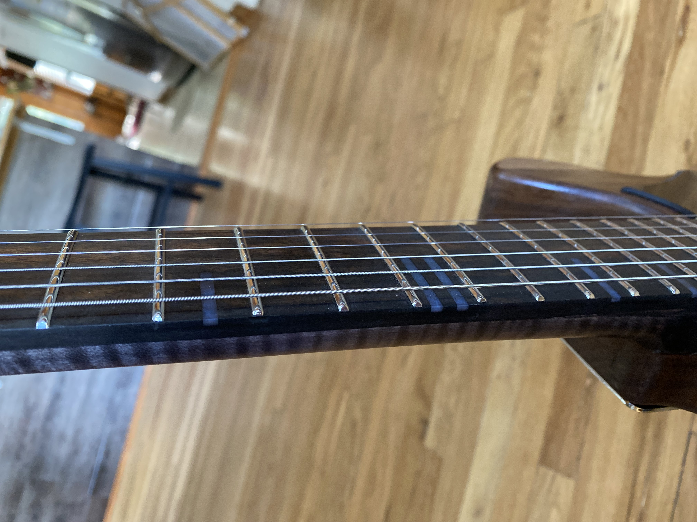

Dorweiler custom build
A unique take on the classic Telecaster design featuring beautiful figured walnut. The natural grain and warm tones of the walnut create a distinctive look while maintaining that iconic Tele playability.
This Telecaster-style build features premium figured walnut with stunning grain patterns. The natural finish lets the wood's character shine through. A versatile pickup configuration provides classic Tele twang with added modern versatility.
I can create a Dorweiler telecaster-style build with figured woods and your choice of hardware. Let's discuss your vision.
Learn About Commissions